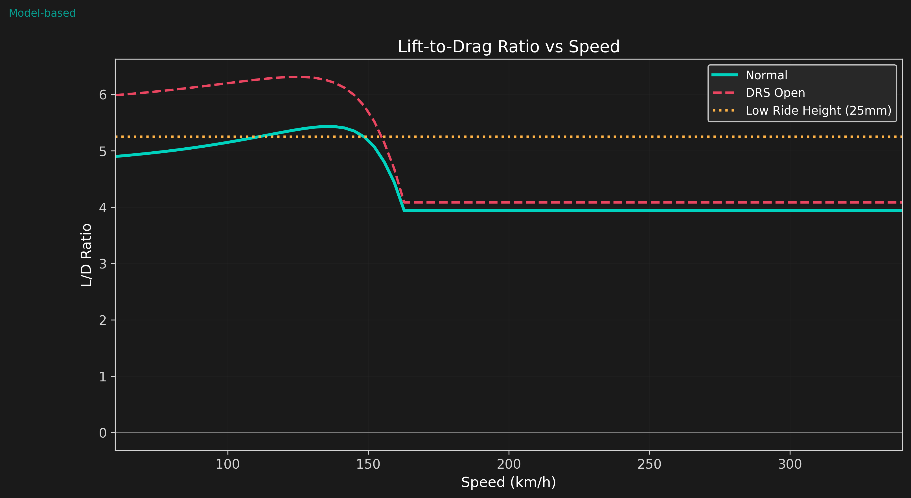
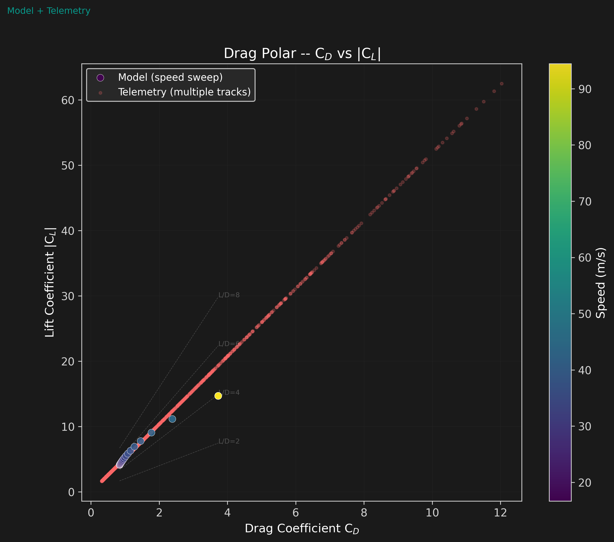
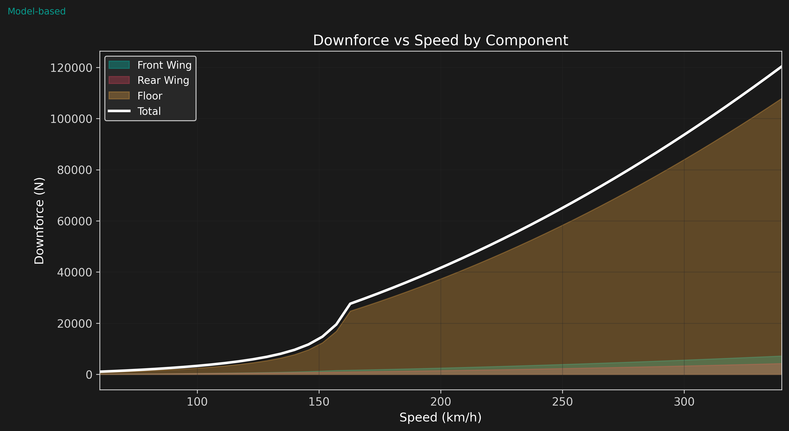
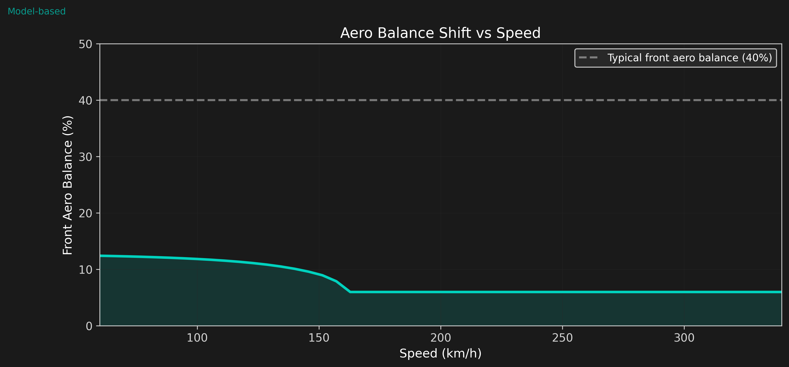

Downforce Analysis
Why Downforce Matters
Downforce is the vertical aerodynamic force that pushes a Formula 1 car into the track, increasing tire grip without adding mass. At 300 km/h, a modern F1 car generates enough downforce to drive upside down on a ceiling. This force enables cornering speeds that would be physically impossible through mechanical grip alone.
The challenge of F1 aerodynamics is balancing downforce generation against the inevitable drag penalty. Every wing, every turning vane, and every millimeter of ride height represents a tradeoff between cornering speed and straight-line velocity.
Analytical Model
The car is modeled as four distinct aerodynamic components, each with their own lift and drag characteristics:
- Front Wing: Multi-element inverted airfoil (4 flaps), ground effect sensitive, manages front tire wake
- Rear Wing: High-downforce inverted airfoil, DRS-capable, dominant drag contributor
- Floor (Diffuser): Venturi tunnel underbody, dominant downforce generator (47--76% depending on mode)
- Body: Chassis, sidepods, engine cover -- primarily drag, minimal downforce contribution
The drag polar follows the parabolic relationship:
where \(k = 1/(\pi \cdot AR \cdot e)\) captures induced drag from the finite-span wing, and \(C_{D0}\) is the zero-lift (profile + parasitic) drag.
Component Breakdown
At low speeds, the floor generates the majority of downforce through the venturi effect. As speed increases, the front and rear wings contribute proportionally more, though the floor remains dominant throughout the speed range.

L/D Ratio
The lift-to-drag ratio (L/D or aerodynamic efficiency) measures how much downforce is generated per unit drag. Higher L/D means more cornering grip relative to straight-line speed loss.

Key observations:
- L/D improves with speed as induced drag becomes a smaller fraction of total drag
- DRS reduces L/D by ~40% (trading downforce for straight-line speed)
- Low ride height (25mm) improves L/D by 12--18% through enhanced ground effect
Drag Polar
The drag polar reveals the quadratic relationship between lift and drag. Each point represents a different speed, sweeping from 60 km/h to 340 km/h.

Downforce vs Speed
Since downforce scales with \(v^2\), the force grows quadratically with speed. At 300 km/h, total downforce exceeds 15 kN -- roughly 1.5 times the car's weight.

Aero Balance
Front aero balance (percentage of total downforce on the front axle) is critical for vehicle handling. Understeer and oversteer tendencies change with speed as the aero balance shifts.

The aero balance shifts rearward at higher speeds as the floor and rear wing become proportionally more effective. This is a known challenge in F1 setup -- a car that is balanced in slow corners may oversteer in fast corners.
Key Findings
- Floor dominance: The underbody venturi generates 47--76% of total downforce, consistent with published 2022+ ground effect era analysis.
- L/D range: Maximum aerodynamic efficiency of 4.5--5.5:1, comparable to published F1 car data at similar downforce levels.
- DRS penalty: Opening DRS reduces L/D by ~40%, justifying its use only on straights where top speed is paramount.
- Balance migration: Front aero balance shifts from ~38% at low speed to ~32% at high speed -- a 6% rearward migration.
- Quadratic growth: Downforce at 300 km/h is ~25x the downforce at 60 km/h (\(v^2\) scaling), confirming the dominant role of speed in aero performance.
Limitations
- Analytical models use idealized thin airfoil theory -- real multi-element wings exhibit nonlinear C_L-alpha behavior near stall.
- Ground effect model is empirical (1/h + 1/h^2) rather than a full potential flow or CFD solution.
- Y250 vortex, tire wake, and front wing-rear wing interaction effects are not modeled.
- Drag polar assumes steady, clean airflow -- real wake turbulence and separation increase drag.
- Component breakdown percentages are calibrated against published CFD, not proprietary team data.
- Body drag is simplified -- cooling drag, suspension drag, and open-wheel drag are bundled into a single C_D value.